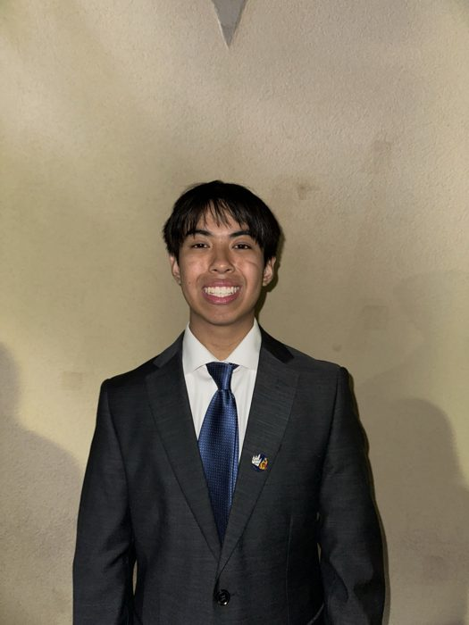
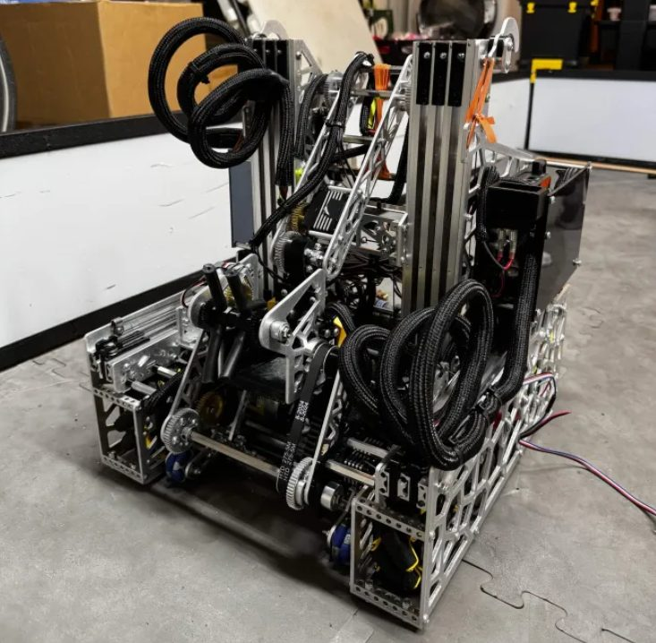
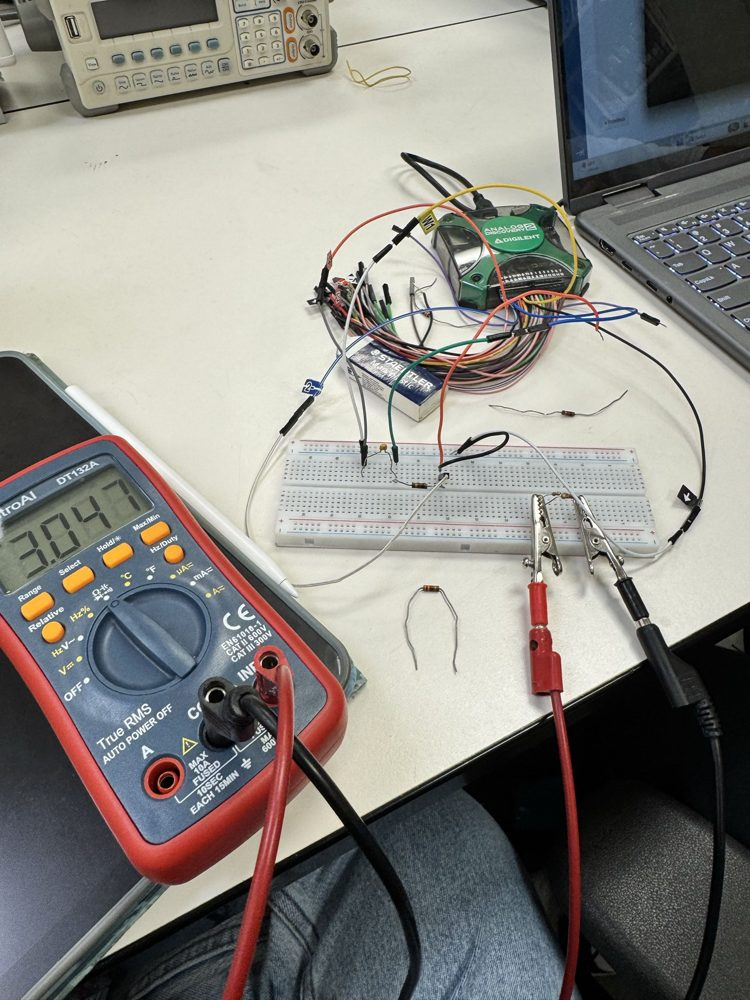
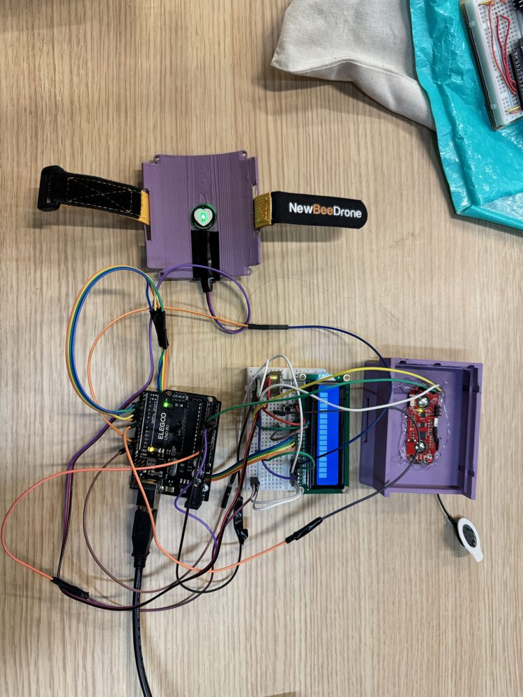
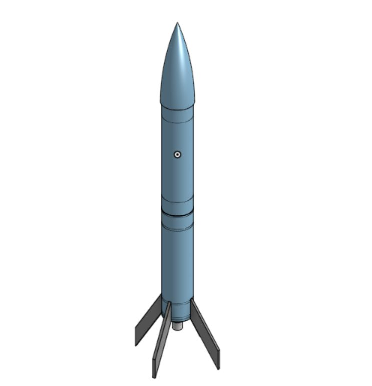
I'm an electrical engineering student at UCLA from Costa Mesa, California. Robotics got me hooked on designing and building systems that interact with the physical world.
I'm currently an embedded systems intern at NASA Armstrong Flight Research Center, working on UAV alignment testing, radio links, and power hardware. On campus I research power converter control at UCLA's PEEC Lab and design PCBs for drones.
I'm open to internship and co-op opportunities in electrical engineering, and I'd love to talk about my work.
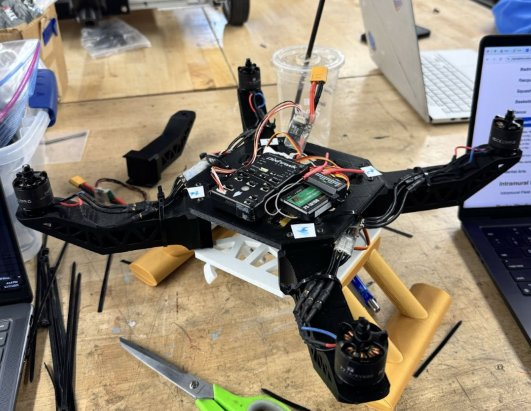
Payload-carrying quadcopter on a Pixhawk 4 flight controller with four KV2550 brushless motors, 4.5 in-pitch props, and a 5600 mAh battery. Two MG90 servos carry up to 1.5 lb (about 5 lb all-up), and bench thrust-vs-power testing picked the motor and prop combination.
Built around a Pixhawk 4 flight controller with an RC receiver and transmitter, aiming for fast, reliable takeoff and precise landing at a light all-up weight.
Problem: Power from the PDU board to the flight controller, motors, ESCs, and RC receiver kept dropping out.
Solution: Poor solder joints and loose ESC bullet connectors were the root cause. Resoldering the joints, adding heatshrink and tape to isolate the cables, and routing wires to prevent entanglement made the connections secure and stable.
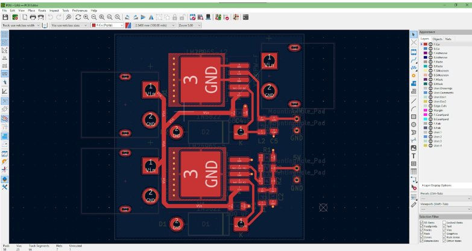
Two-layer KiCad power distribution board with dual XT-60 LiPo inputs and two LM2596 buck converters that generate regulated 5V and 12V rails for the flight controller, electronics, and ESCs, plus battery passthrough.
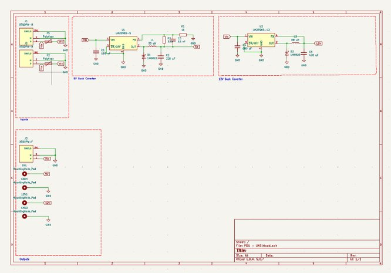
A general-purpose power distribution board for UAV electronics that stays agnostic to which battery packs and wiring (series or parallel) the team ends up using.
Problem: The battery packs, and whether they would be wired in parallel or series, were not decided, which made it hard to pick connectors and converters.
Solution: A generalized board with modular component choices (LM2596 for general step-down conversion and XT-60 connectors for easy connections) so the design works across pack configurations.
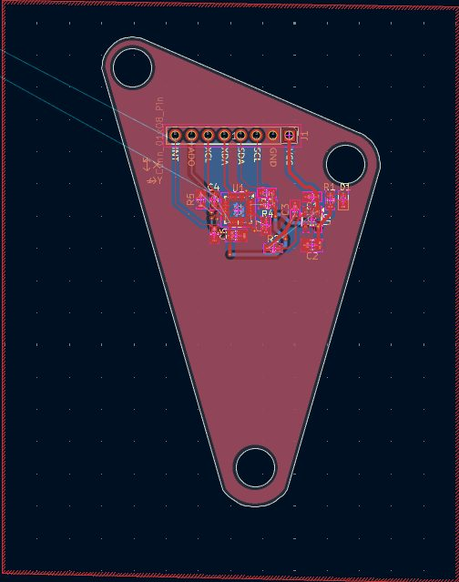
MPU-6050 IMU breakout with an AP2112K 3.3V LDO, I2C pull-ups, and sensor decoupling on a triangular board that mates to a Jansen linkage. It feeds neck position data to a wearable that drives 12 pneumatic solenoid valves.
A small sensor board for a medical wearable that senses real-time neck position and corrects cervical misalignment through 12 independently actuated pneumatic solenoid valves, controlled by an ESP32-based main board.
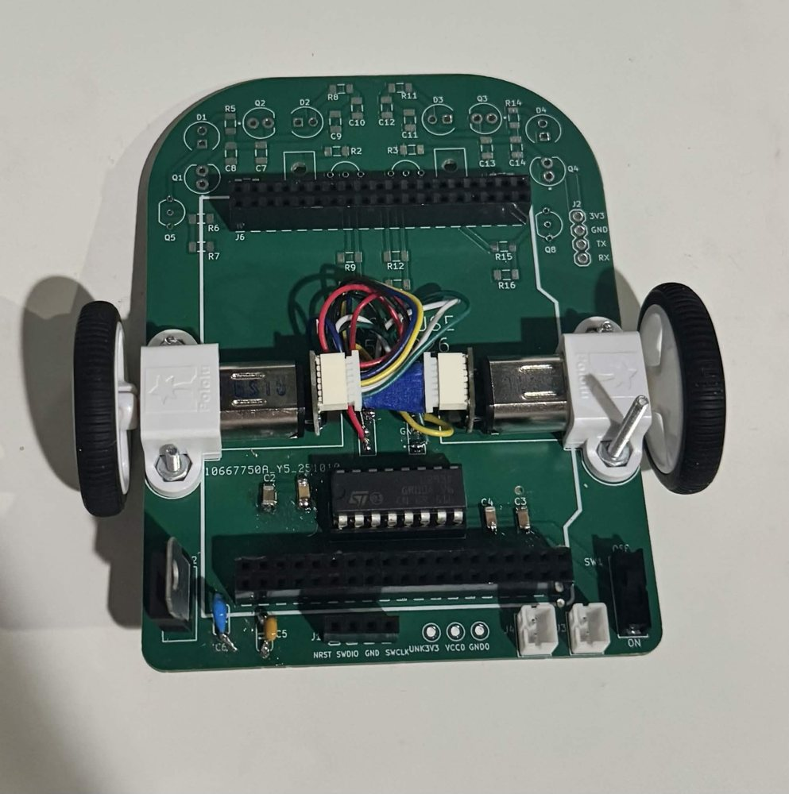
Maze-solving Micromouse PCB with a four-pair IR emitter/receiver wall sensor array, a dual H-bridge motor driver with encoder inputs, and a switched 3.3V LDO. Sensor traces avoid the motor lines, and a separate MGND plane keeps motor return currents out of the logic.
A custom PCB that serves as both chassis and electronics for a maze-solving robot: sensing, motor drive, power, and a microcontroller on one board.
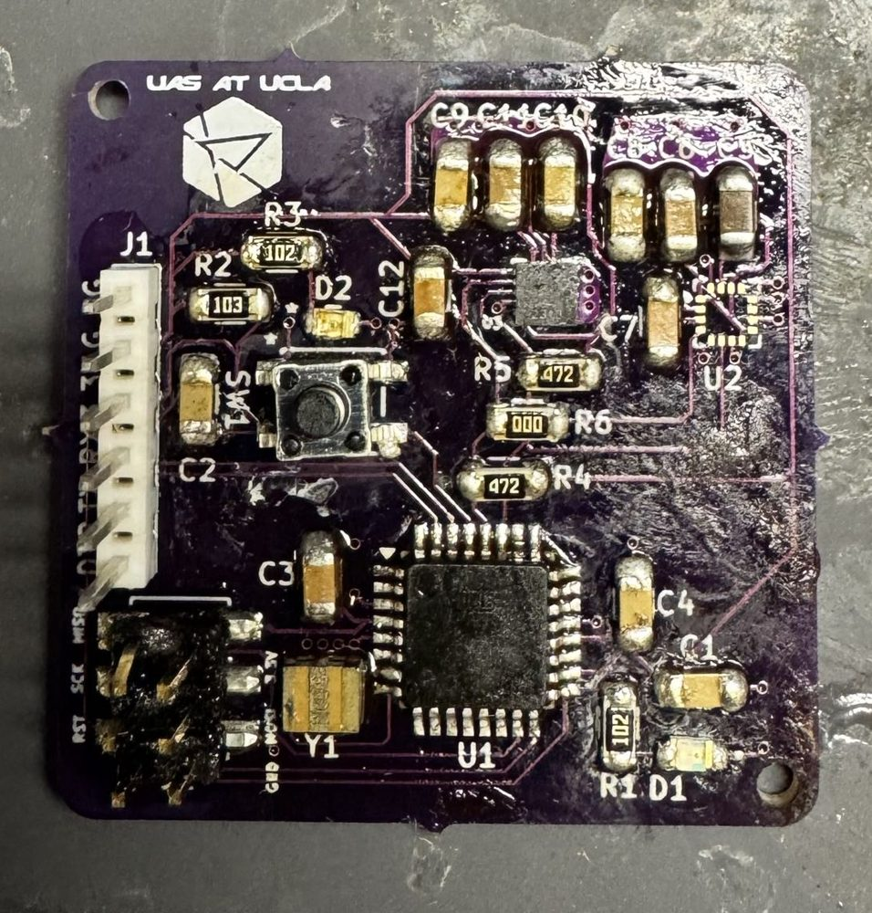
Two-layer flight sensor board: ATmega328P-A at 3.3V with an LSM303D accelerometer/magnetometer (I2C) and an IAM-70392 gyroscope (SPI). FTDI auto-reset and ICSP headers give two programming paths, and bypass caps and a dedicated 3.3V rail keep the sensor bus clean.
Flight sensor board for UAS at UCLA that combines an accelerometer, magnetometer, gyroscope, and a microcontroller, designed in KiCad. I also wrote the test procedures and acceptance criteria used to validate it before flight.
Problem: The JST headers did not match the specific sensor and MCU pinouts.
Solution: Cross-checked the datasheets for the ICSP and FTDI headers to prevent any physical wire swap.
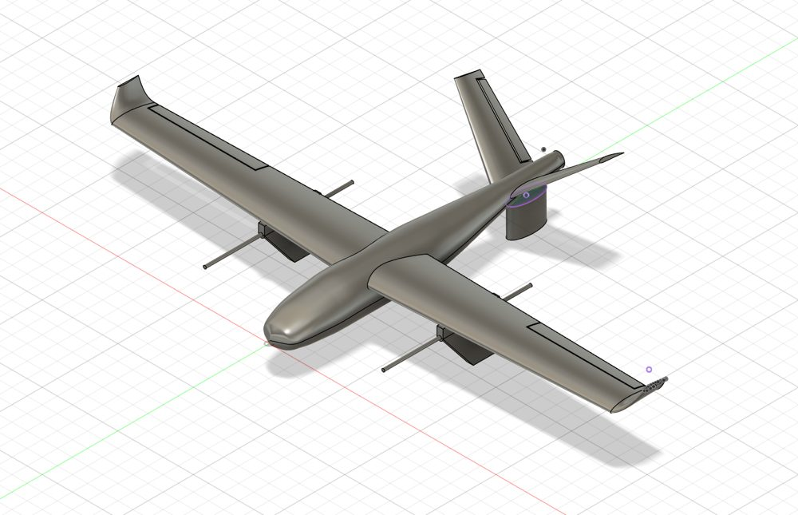
VTOL airframe modeled in Fusion 360 with a carbon fiber rod frame and 3D-printed electronics housing. A Pixhawk running ArduPilot manages the vertical-to-forward-flight transition, with live video over a telemetry radio and a power distribution harness sized for a 2 lb payload.
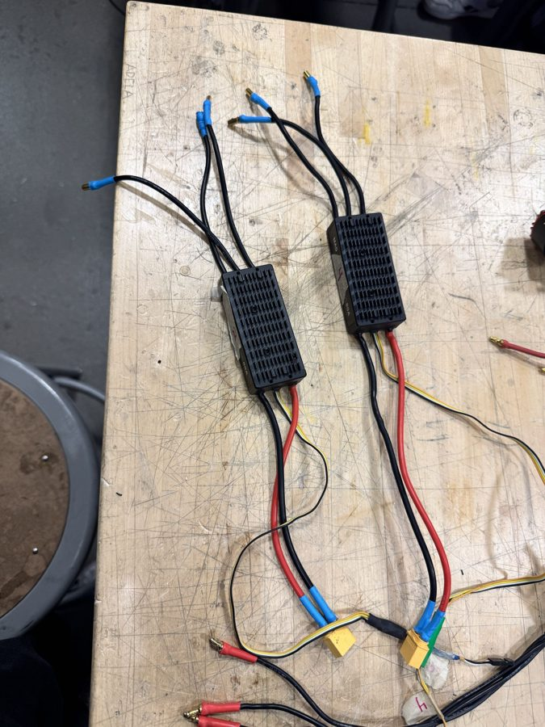
A vertical take-off and landing aircraft combining a fixed wing with lift motors on booms, so it can take off and land without a runway and cruise efficiently in forward flight.
C++JavaPythonMATLABMcCreatorRoblox Studio
OscilloscopeDigital MultimeterElectronic LoadDC Power SupplyWaveform GeneratorAD2
Circuit DesignPCB/PCBA Layout & DesignSchematic CaptureTest Procedure DevelopmentRoot-Cause TroubleshootingTechnical DocumentationControl SystemsLTspiceKiCadAltiumSolderingSTM32Arduino
CreoFusion 3603D PrintingCNC ManufacturingRapid PrototypingCAMDrill Press
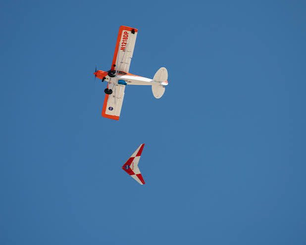
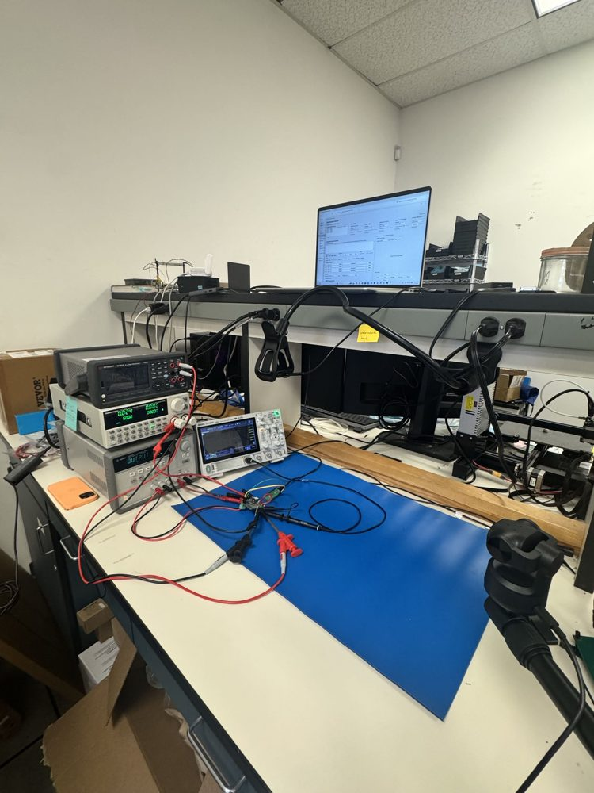
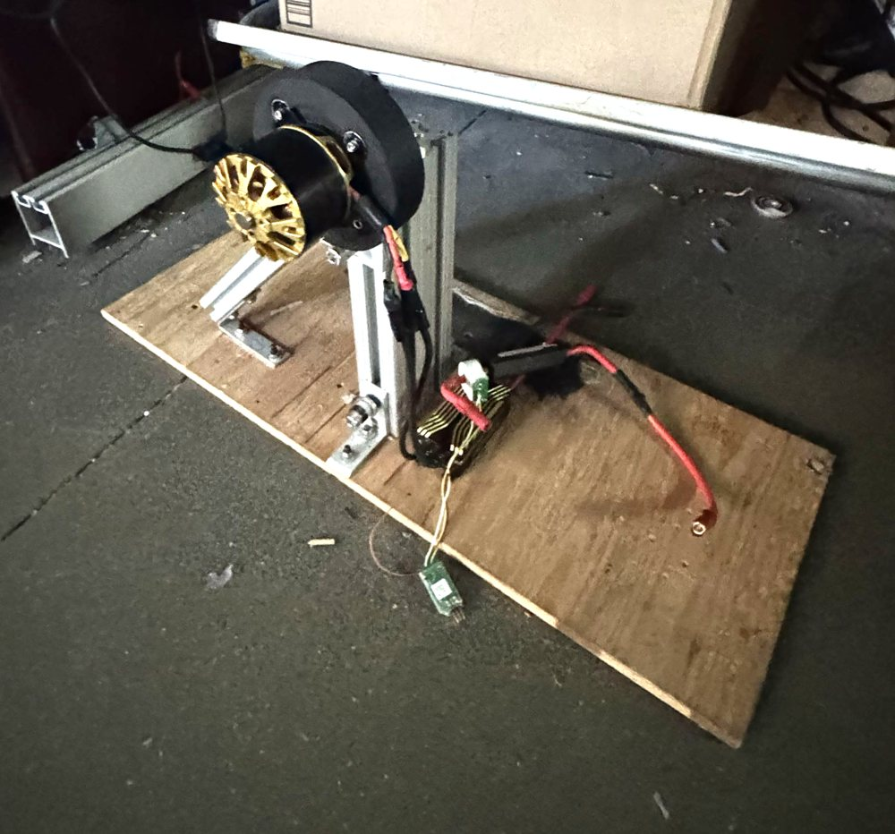
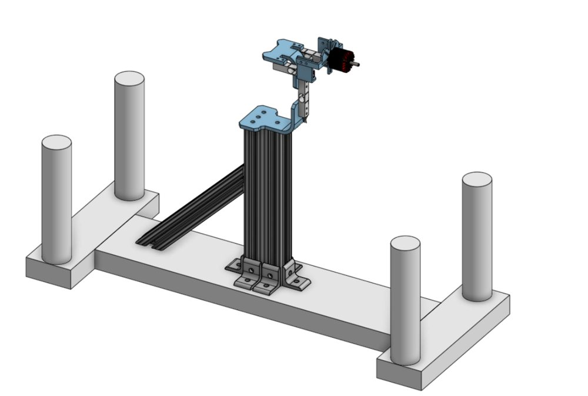
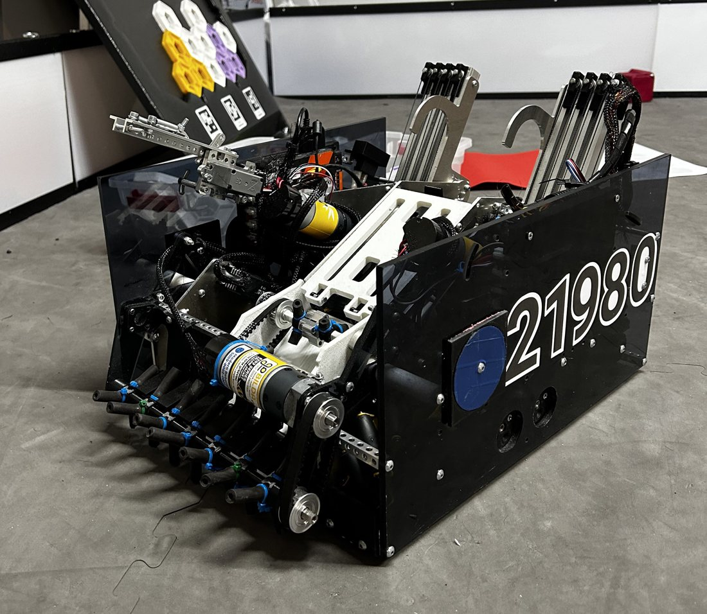